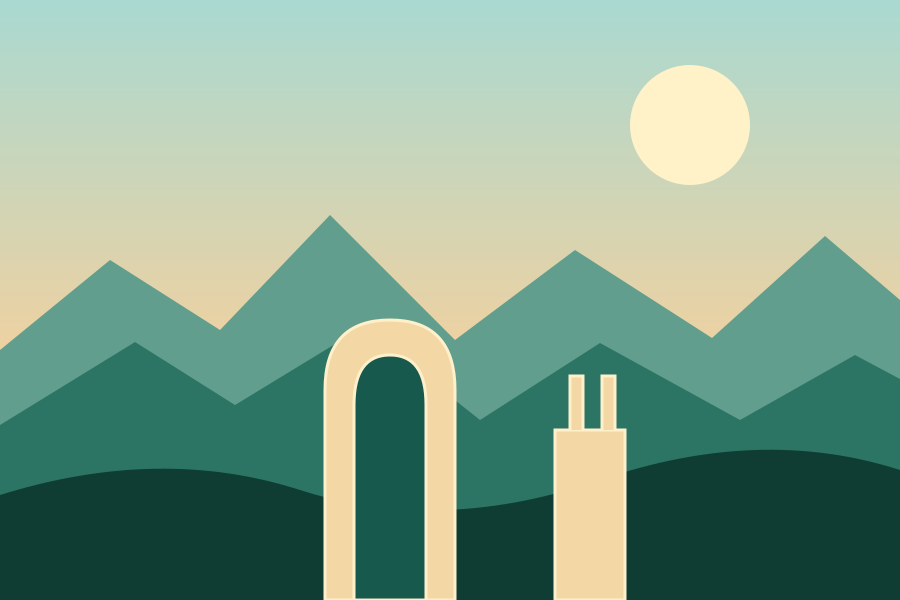

از جنگل شمال تا جزایر جنوب
مقصدهای ایران
برای هر مقصد صفحهٔ جداگانهای شامل ویژگیها، برنامهریزی و نکات مسئولانه سفر وجود دارد.



تصاویر این نسخه تصویرسازیهای موضوعیاند، نه مدرک عکاسی از یک مکان خاص. جزئیات متغیر مانند ساعات بازدید، قیمت و وضعیت دسترسی را نزدیک سفر از مرجع رسمی بررسی کنید.